SPRITEKIT
Building a 2D world, one node at a time.
Inside an app
- SwiftUI can display a scene with
SpriteView - UIKit can present a scene in an
SKView - The scene contains the game’s nodes
Different jobs, together
- SwiftUI describes interface views from state
- SpriteKit updates a 2D scene over time: movement, actions and physics
- Use SwiftUI for menus and controls around the game
SwiftUI & UIKit
- SwiftUI and UIKit work together on iOS
- Some SwiftUI views use UIKit; others use different rendering paths
- SwiftUI also runs on platforms that use AppKit
SpriteKit & Metal
SpriteViewembeds SpriteKit in SwiftUI;SKViewpresents it in UIKit- SpriteKit uses Metal for GPU rendering on supported devices
- Metal also supports some SwiftUI rendering paths
- A framework for 2D scenes on Apple platforms
- Sprites, animation, actions, effects, physics and sound
- Compose a world from small objects
- A player moves, jumps and attacks
- Enemies inhabit a tile-based level
- An exit gives the level a goal
- We will use the project as a recurring example
└── SKScene
├── Level / tiles
├── Player
├── Enemies
└── Camera
└── HUD
- A scene is a tree of nodes
- Children inherit their parent’s transforms
- The graph is conceptual; inspect the scene editor for the actual hierarchy
let zombie = SKSpriteNode(imageNamed: "Zombie")
zombie.position = CGPoint(x: 0, y: 0)
zombie.anchorPoint = CGPoint(x: 0.5, y: 0.5)
zombie.xScale = 1
zombie.yScale = 1
zombie.zRotation = 0
zombie.zPosition = 10
scene.addChild(zombie)
let marker = SKShapeNode(circleOfRadius: 8)
zombie.addChild(marker)- A child’s position is in its parent’s coordinates
- Moving the parent moves its children
zPositioncontrols drawing order
The anchor point is the sprite’s local origin.
- Position locates that origin in the parent
- Scale and rotation act around the origin
- Compare the same position with three anchors
Next: watch the picture move while the code stays at (0, 0).
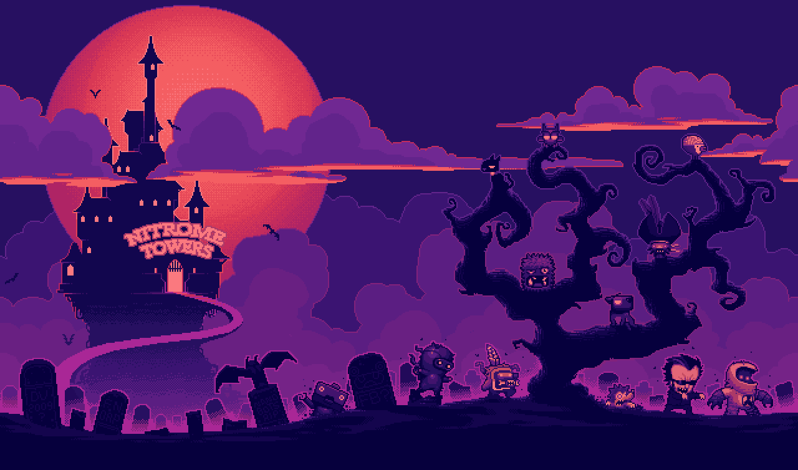
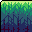
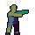
zombie.position = CGPoint(x: 0, y: 0)
zombie.anchorPoint = CGPoint(
x: 0.5, y: 0.5
)The origin sits at the center; this is SpriteKit’s default.
zombie.position = CGPoint(x: 0, y: 0)
zombie.anchorPoint = CGPoint(
x: 0, y: 0
)The origin sits at the sprite’s lower-left corner.
zombie.position = CGPoint(x: 0, y: 0)
zombie.anchorPoint = CGPoint(
x: 1, y: 1
)The origin sits at the sprite’s upper-right corner.
zombie.position = CGPoint(x: 0, y: 0)
zombie.anchorPoint = CGPoint(
x: 0.5, y: 0.5
)
zombie.zRotation = .pi / 2Anchor and position stay fixed. Positive rotation is counterclockwise.
zombie.position = CGPoint(x: 0, y: 0)
zombie.anchorPoint = CGPoint(
x: 0.5, y: 0.5
)
zombie.zRotation = .piAnchor and position stay fixed. Positive rotation is counterclockwise.
zombie.position = CGPoint(x: 0, y: 0)
zombie.anchorPoint = CGPoint(
x: 0.5, y: 0.5
)
zombie.zRotation = .pi + .pi / 2Anchor and position stay fixed. Positive rotation is counterclockwise.
zombie.position = CGPoint(x: 0, y: 0)
zombie.anchorPoint = CGPoint(
x: 0.5, y: 0.5
)
zombie.zRotation = 2 * .piAnchor and position stay fixed. Positive rotation is counterclockwise.
zombie.anchorPoint = CGPoint(x: 0, y: 0)
zombie.position = CGPoint(x: 0, y: 0)
zombie.zRotation = .pi / 2The pivot moves to the bottom-left anchor and the rotation changes.
zombie.anchorPoint = CGPoint(x: 0, y: 0)
zombie.position = CGPoint(x: 0, y: 0)
zombie.zRotation = .piThe sprite continues rotating around its bottom-left anchor.
zombie.anchorPoint = CGPoint(x: 0, y: 0)
zombie.position = CGPoint(x: 0, y: 0)
zombie.zRotation = .pi + .pi / 2The sprite continues rotating around its bottom-left anchor.
zombie.anchorPoint = CGPoint(x: 0, y: 0)
zombie.position = CGPoint(x: 0, y: 0)
zombie.zRotation = 2 * .piThe sprite continues rotating around its bottom-left anchor.
zombie.anchorPoint = CGPoint(x: 0.5, y: 0.5)
zombie.position = CGPoint(x: 120, y: 80)The centered anchor follows the node position, moving the zombie with it.
zombie.anchorPoint = CGPoint(x: 0.5, y: 0.5)
zombie.position = CGPoint(x: -120, y: -60)A negative position moves the centered anchor left and down.
zombie.anchorPoint = CGPoint(x: 0.5, y: 0.5)
zombie.position = CGPoint(x: 0, y: 0)
zombie.xScale = 2
zombie.yScale = 2Scaling doubles the sprite’s width and height around its centered anchor.
zombie.anchorPoint = CGPoint(x: 0.5, y: 0.5)
zombie.position = CGPoint(x: 0, y: 0)
zombie.xScale = 2
zombie.yScale = -2A negative yScale flips the sprite vertically.
zombie.anchorPoint = CGPoint(x: 0.5, y: 0.5)
zombie.position = CGPoint(x: 0, y: 0)
zombie.xScale = -2
zombie.yScale = -2A negative xScale also flips the sprite horizontally.
let parent = SKNode()
let player = SKSpriteNode(imageNamed: "PlayerIdle1")
zombie.position = CGPoint(x: 120, y: 0)
player.position = CGPoint(x: -120, y: 0)
parent.addChild(zombie)
parent.addChild(player)
addChild(parent)The zombie and player are children of the same parent. Red dots mark their positions.

parent.position = CGPoint(x: -80, y: 80)
// Both children keep their local positionsMoving the parent moves both children. Their local positions stay the same.
- A camera determines which part of the scene is visible
- Moving the camera changes the view of the world
- Camera scale controls how much of the scene is visible
- Camera children can keep controls fixed on screen
let camera = SKCameraNode()
scene.addChild(camera)
scene.camera = camera
camera.xScale = 0.5
camera.yScale = 0.5
// On each update, after the player moves:
camera.position = player.positionA camera can follow the player.
- Set up the camera once
- Use scale to zoom the view
- Update its position as the player moves
Smaller scale values show less of the scene.
camera.addChild(joystick)
joystick.position = CGPoint(
x: -scene.size.width / 2 + safeArea.left,
y: -scene.size.height / 2 + safeArea.bottom
)The joystick is a child of the camera.
- Its position is in camera coordinates
- It moves with the camera, staying fixed on screen
- Safe-area insets keep controls clear of screen edges
The joystick handles input; the camera follows the player in its update.
SpriteKit updates the scene, then renders a frame.
- Callbacks let your game run logic at specific points
- Actions, physics and constraints can change nodes between callbacks
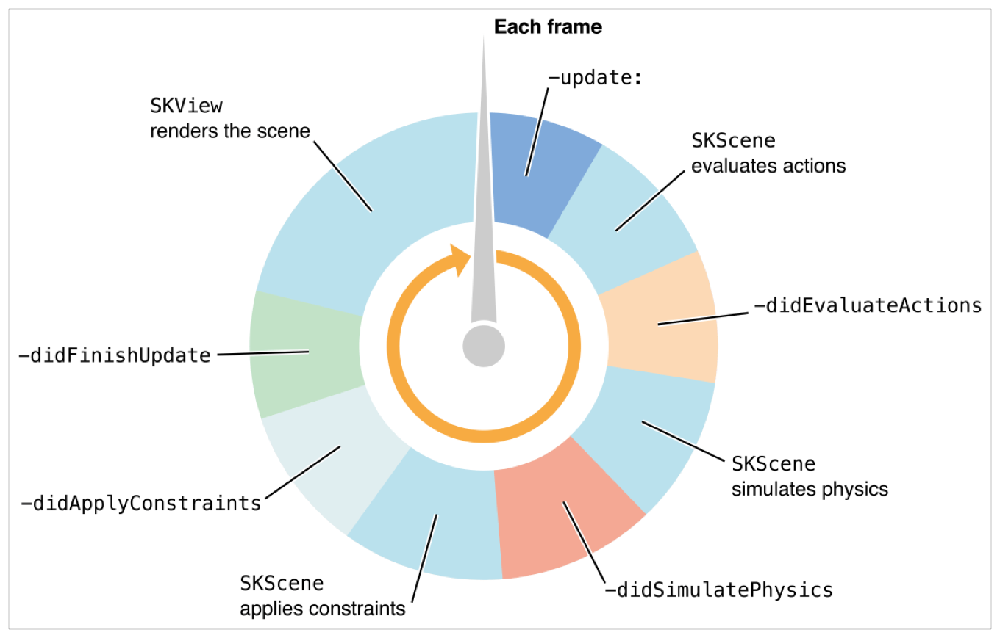
override func update(_ currentTime: TimeInterval) {
readInput()
updateGameState()
startActionsIfNeeded()
}Use it for
Read movement input, advance a timer, or start an action when a state changes.
Keep in mind
Start a running action once, not on every frame. Actions and physics run later.
override func didEvaluateActions() {
// Actions have updated node positions.
updateTrailPosition()
}Use it for
Place a trail at a node’s updated position after its move action runs.
Keep in mind
Physics runs next and may move the node again; use the later callback if you need its physics position.
override func didSimulatePhysics() {
// Physics has updated body positions.
camera.position = player.position
}Use it for
Move the camera to the player’s position after physics resolves movement.
Keep in mind
Physics has already run; a new force or body change waits for the next simulation.
override func didApplyConstraints() {
// Constraints have adjusted the nodes.
updateIndicatorPosition()
}Use it for
Position an indicator after a constraint has adjusted the target’s position.
Keep in mind
Changing a constraint now won’t apply the new constraint until the next frame.
override func didFinishUpdate() {
// Final scene adjustments for this frame.
updateHUD()
}Use it for
Refresh a visible HUD value after the game’s update stages have finished.
Keep in mind
Only update the HUD when its value changes; earlier processing stages won’t run again.
- Every frame shares a limited time budget
- The budget covers game logic, SpriteKit, rendering and other work
Keep each frame light
- Reuse nodes and textures instead of recreating them every frame
- Start repeating actions once, rather than restarting them in
update(_:) - Update labels and other UI only when their values change
- Avoid expensive searches and work that can be done less often
The following examples are grouped using the sections in Apple’s SpriteKit documentation.
- Nodes that draw
- Nodes for environmental effects
- Nodes that modify drawing
- Draw visible content such as images, shapes, text, particles, video and tiles
- Use these nodes when something should appear in the scene
- Examples include SKSpriteNode, SKLabelNode and SKEmitterNode
Images & textures
- A sprite can display an image or a solid color
- Creating a sprite from an image creates its texture automatically
- Multiple sprites can share one texture
- SK3DNode displays SceneKit content in a SpriteKit scene
Useful options
- Change a sprite’s texture to show a different image
- Apply a color tint, for example when a character takes damage
- Preload textures before a scene when you need them ready
let atlas = SKTextureAtlas(named: "PlayerWalk")
let frames = (1...6).map { index in
atlas.textureNamed("PlayerWalk\(index)")
}
let walk = SKAction.animate(
with: frames,
timePerFrame: 0.1
)
player.run(
.repeatForever(walk),
withKey: "walk"
)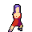
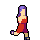
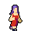
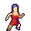
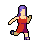
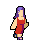
- SKTileMapNode arranges tile definitions on a grid
- Visual tiles do not automatically create per-tile physics
- The project’s Level builds collision geometry separately
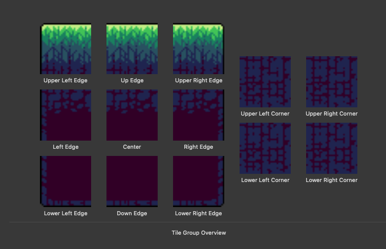
- SKLabelNode displays text, such as a score
- SKShapeNode draws shapes, such as circles and bars
- SKVideoNode plays video inside the scene
- SKNode groups HUD elements together
Attach HUD nodes to the camera to keep them on screen.
let joystick = Joystick()
let buttons = ControlButtons()
camera.addChild(joystick)
camera.addChild(buttons)
joystick.position = bottomLeft
buttons.position = bottomRight
// JumpButton handles touches:
player.jump()- The joystick and buttons are camera children
- The joystick turns input into movement
- Jump and attack buttons respond to touches
- Positions are in camera coordinates
- SKEmitterNode creates many small particles over time
- Use particles for sparks, smoke, magic and trails
- Design and preview the effect in Xcode’s particle editor
- Birth rate and lifetime affect performance
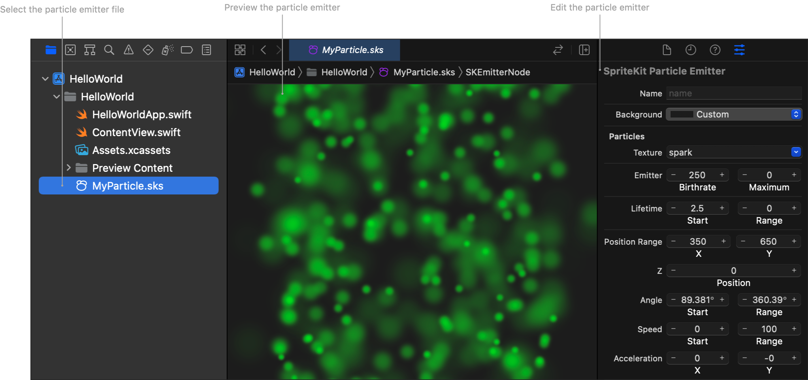
let particles = SKEmitterNode(
fileNamed: "EyeParticles.sks"
)!
particles.particleBirthRate = 0
particles.targetNode = scene
eye.addChild(particles)
// While the eye moves:
particles.particleBirthRate = 30
// Stop emitting when it stops.How it works
- Load an emitter designed in Xcode
- Attach it to the moving eye
- Set a target node so emitted particles stay in the scene
- Start and stop emission with the eye’s movement
- Affect the scene with audio, light or forces
- Influence other content or physics bodies rather than drawing their own artwork
- Examples include SKAudioNode, SKLightNode and SKFieldNode
- SKAudioNode plays sound in a scene
- Use positional audio for sounds tied to a location
- AVAudioSession configures how the app’s audio behaves on iOS
.ambientmixes with other audio and respects silent mode
Add the audio file to the app bundle.
import AVFoundation
// Configure once when setting up app audio.
do {
try AVAudioSession.sharedInstance()
.setCategory(.ambient)
} catch {
print("Audio setup failed: \(error)")
}
let music = SKAudioNode(fileNamed: "music.mp3")
music.isPositional = false
music.autoplayLooped = true
scene.addChild(music)- SKLightNode illuminates matching sprites and tile maps
- Move a light with a character or animate it
- Use it for torches, lamps or a glowing ghost
- A light affects surfaces; it is not visible on its own
let light = SKLightNode()
light.categoryBitMask = 1
light.lightColor = .cyan
light.ambientColor = .darkGray
light.falloff = 0.7
ghost.addChild(light)
ground.lightingBitMask = 1How it works
- The light follows the ghost because it is a child
- Matching masks let the ground receive the light
- Falloff controls how quickly light fades with distance
- Ambient color keeps areas away from the light visible
- SKFieldNode applies forces to physics bodies
- Use radial gravity to pull nearby bodies toward a point
- Limit its region and category mask to control its reach
- An eye can attract the player and cause damage on contact
let field = SKFieldNode.radialGravityField()
field.strength = 5
field.region = SKRegion(radius: 160)
field.categoryBitMask = FieldMask.eye
eye.addChild(field)
player.physicsBody?.fieldBitMask = FieldMask.eyeHow it works
- Positive strength attracts toward the field center
- The region limits the effect to nearby bodies
- Matching field masks choose which bodies are affected
- Use a physics contact to damage the player on touch
- Change how their child nodes are rendered
- Use them to mask content, apply effects or rotate children in 3D
- Examples include SKCropNode, SKEffectNode and SKTransformNode
- SKCropNode draws its children through a mask
- The mask shape determines which parts are visible
- Use it for windows, portals, spotlights or clipped effects
let crop = SKCropNode()
crop.maskNode = SKShapeNode(
circleOfRadius: 45
)
crop.addChild(eye)
addChild(crop)How it works
- The white shape defines the visible window
- Children of the crop node appear only inside the mask
- Move a child through the mask to reveal clipping
- The outline is a separate shape above the crop
- SKEffectNode renders its children into a separate buffer
- Apply a Core Image filter to the rendered children
- Use it for effects such as blur or color adjustments
- Animate filter properties to change the effect over time
let effect = SKEffectNode()
effect.filter = CIFilter(
name: "CIGaussianBlur",
parameters: [kCIInputRadiusKey: 5]
)
effect.shouldEnableEffects = true
effect.addChild(ghost)
scene.addChild(effect)How it works
- The ghost is a child of the effect node
- Core Image blurs the rendered children
shouldEnableEffectsturns the filter on or off
Position and distance
- Keep a node within a range on the x or y axis
- Keep a node within a distance of a point or another node
Orientation
- Rotate a node to face a point or another node
- Limit a node’s rotation to a range
SpriteKit applies constraints after actions and physics, before rendering.
let lookAtPlayer = SKConstraint.orient(
to: player,
offset: SKRange(constantValue: 0)
)
eye.constraints = [lookAtPlayer]How it works
- The eye rotates to face the player as they move
- The offset adjusts the artwork’s facing direction
- Apply the constraint to the artwork so the field stays fixed
let pulse = SKAction.sequence([
.scale(to: 1.2, duration: 0.2),
.scale(to: 1.0, duration: 0.2)
])
node.run(.repeatForever(pulse),
withKey: "pulse")- sequence: one after another
- group: together
- Keys let you find or remove actions
- Coordinate actions and physics when both affect motion
- Gravity acts on dynamic bodies
- Static bodies provide walls and ground
- SKPhysicsBody defines a node’s shape, velocity and other physical properties
- An impulse changes momentum immediately
player.physicsBody = SKPhysicsBody(
rectangleOf: player.size
)
player.physicsBody?.applyImpulse(
CGVector(dx: 0, dy: 120)
)| Body | Category | Collision mask | Contact mask |
|---|---|---|---|
| Player | 001 | 110 | 010 |
| Ground | 010 | 001 | 000 |
| Zombie | 100 | 001 | 000 |
Player + ground: collision and contact notification.
Player +
zombie: collision; no contact notification requested.
Bits shown: zombie · ground · player
enum CategoryBitMask {
static let groundTile: UInt32 = 0b1
static let player: UInt32 = 0b100
static let zombie: UInt32 = 0b1000
}
// Combine categories with bitwise OR
let collision = CategoryBitMask.groundTile |
CategoryBitMask.zombie- Named constants explain what each bit represents
- Define categories in one place and reuse them throughout the game
- Combine categories with
|to describe interactions - Avoid hardcoded values when assigning masks
// In the scene setup
physicsWorld.contactDelegate = self
extension LevelScene: SKPhysicsContactDelegate {
func didBegin(_ contact: SKPhysicsContact) {
let a = contact.bodyA
let b = contact.bodyB
// Check their categories and handle the contact.
}
}- Set the physics world’s contact delegate to receive notifications
- didBegin runs when a requested contact starts; didEnd runs when it ends
- Contact masks decide which interactions generate callbacks
- Check both bodies before applying game logic
- SKPhysicsJoint connects two physics bodies
- Pin joints let connected bodies rotate around an anchor
- Chain multiple segments together to create a flexible rope
- Attach the player to the rope’s end, then remove the joint to let go
var previous = anchor.physicsBody!
for segment in ropeSegments {
let body = segment.physicsBody!
let pin = SKPhysicsJointPin.joint(
withBodyA: previous,
bodyB: body,
anchor: segmentTopInScene
)
physicsWorld.add(pin)
previous = body
}How it works
- The first segment connects to a fixed anchor
- Each pin connects a segment to the previous body
- Joint anchors use scene coordinates
- Another pin attaches the player; remove it when they jump
- Turn on
view.showsPhysics = true - Inspect body shapes and unexpected contacts
- A contact normal depends on body ordering: identify bodies before interpreting its direction
- Consider precise collision detection for fast bodies
- Hitbox receives a hit; hurtbox represents an attack area in this project
- Attack checks run while the hurtbox is attached
- Damage starts a temporary invulnerability window
-
The project uses
intersectsfor these checks
A state decides what is allowed now—and what can happen next.
Death may interrupt an attack. Jumping and temporary invulnerability can be independent.
let machine = GKStateMachine(states: [
IdleState(), WalkingState(),
AttackingState(), DeadState()
])
machine.enter(IdleState.self)
// In the frame loop, when needed:
machine.update(deltaTime: dt)isValidNextStatecontrols transitions-
didEnterandwillExithandle lifecycle - Update a state each frame when its behavior needs it
final class AttackState: GKState {
override func didEnter(
from previousState: GKState?
) {
// Start attack animation and hit window.
}
override func willExit(
to nextState: GKState
) {
// Remove attack area.
}
}| SpriteKit | Shared idea | RealityKit |
|---|---|---|
| Scene / node tree | Hierarchy and transforms | Scene / entity hierarchy |
| Sprites & actions | Visuals and animation | Models and animation |
| Physics bodies & contacts | Simulation and events | Physics, collision and events |
| Camera node | Viewpoint | Camera / viewpoint |
Similar concepts; different APIs, coordinate systems and dimensions.
The same damage system can process a player, zombie or door.
- Build a scene graph from nodes
- Understand local transforms and camera space
- Separate physics collision response from contact notifications
- Model behavior with clear state transitions
- Carry hierarchy, transforms and physics concepts into RealityKit
Together, we’ll build a Flappy Bird game loop.
- Inspect player and pipe physics categories
- Add a non-colliding sensor in the gap
- Handle the player contact once
- Update the score and play the point sound
- Make a game-over screen with a restart option
- Connect the game loop with a state machine
What will you build next?